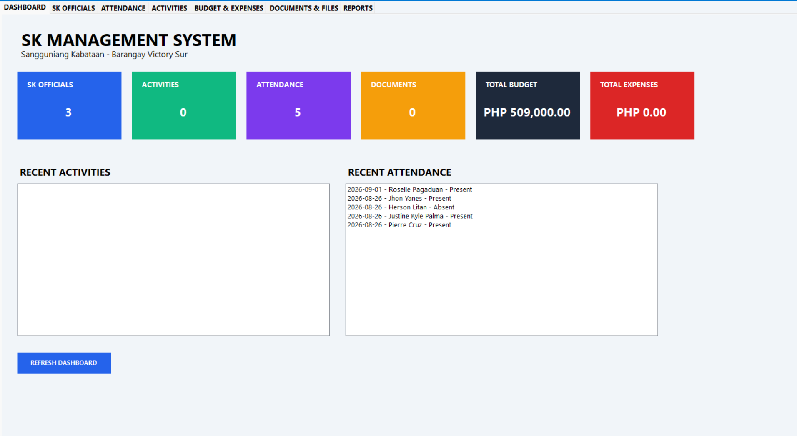
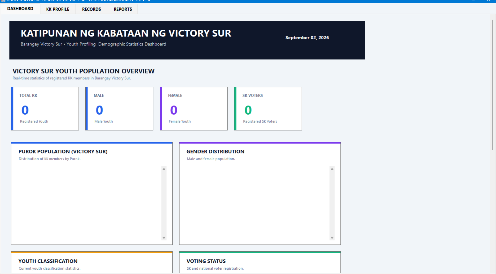

Featured Projects
Technical systems and solutions developed

SK Management System
A management system designed to assist Sangguniang Kabataan operations by organizing youth records, project information, documentation, and administrative data. The system helps improve data organization, accessibility, and efficiency in managing community-related information.

KK Profiling Management System
A profiling management system created to store, organize, and manage youth information. The system provides an organized approach to maintaining records and retrieving important profiling data efficiently.

SGYG Document System
A document management system developed to organize files, reports, and important records while improving document retrieval and administrative workflow.

Robotic Aerial Drone System
A thesis project focused on designing a robotic aerial drone with motion detection using Arduino Nano for disaster management applications. The project combines embedded systems, robotics, and hardware-software integration.